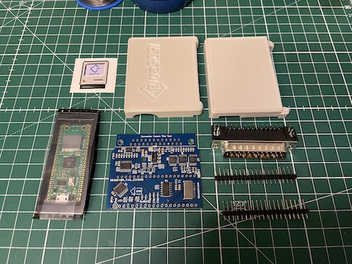
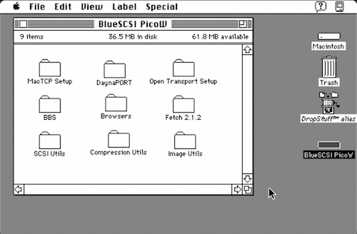
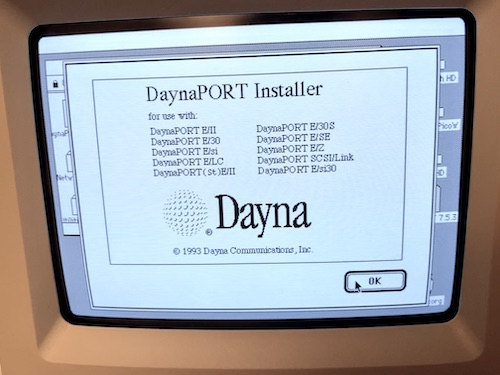
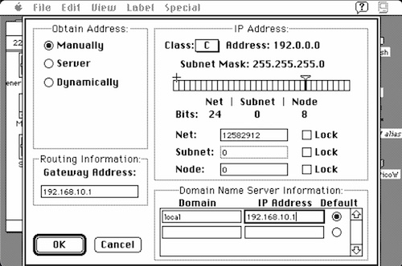
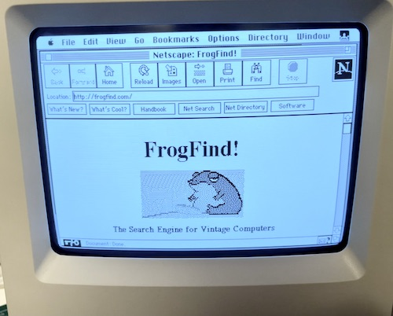
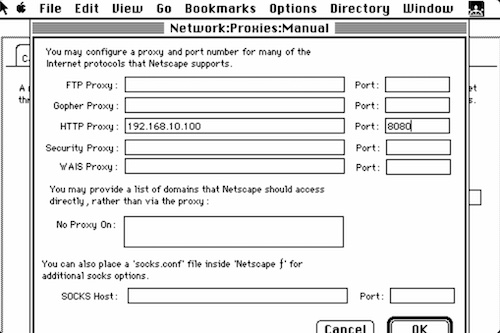

The Solana Vanishing Act
The Solana Vanishing Act
Now that I've renovated my Macintosh Performa 200 (Classic II), I wanted to put some software on it. Apple used a 1.44MB PC compatible floppy drive (SuperDrive) in the Classic II, so one way is to buy a USB floppy drive and some floppy disks and it's possible to transfer files that way, but I wanted a faster and more flexible solution and that's where the BlueSCSI comes into the picture.
BlueSCSI is a project that aims to create an open source SCSI solution for vintage computers. It's mainly driven by Apple enthusiasts, so it has vintage Macs in mind as default, but of course it works with many other systems too. BlueSCSI v2 is a completely redesigned board that's based around the Raspberry Pi Pico microcontroller. It also shares some code with ZuluSCSI's SCSI2SD implementation.
The reason I chose BlueSCSI instead of ZuluSCSI or the Pi/RASCSI project is that I was mainly aiming to use it on Mac and the possibility of accessing the Internet with it was also appealing. Not to mention the cost, which is very reasonable, from 34 EUR for a build it yourself kit.

BlueSCSI comes in different form factors, for both internal or external use. I decided to pick up the DB25 connector version (external unit), as I didn't want to replace my internal hard drive (yet), and I was afraid that the wireless capabilities would be impacted if I would install it inside the Mac's housing. The DB25 unit comes with a 3D printed case, it has SCSI termination installed and enabled by default and it connects to the SCSI port on the back of your Mac. I got the kit, which had to be assembled, which was pretty easy. The SMD components are already soldered on, so what's left is to solder on the DB25 connector and the connector for the Raspberry Pi Pico W (which comes included with the kit).
After assembly, you can prepare a micro SD card. There are blank or pre-installed images you can download, but you can also make your own hard drive image with Basilisk II. I downloaded a 1GB blank image, booted up Basilisk II with System 7.5, with the blank image being the second drive, and copied over the software I wanted to try on my vintage Mac. You need to rename the images to be able to do this, as Basilisk II looks for the .dsk extension for images, while BlueSCSI expects the images to be .hda.
Setting up the BlueSCSI is very easy. Just format a micro SD card to FAT or exFAT. I recommend using the SD Card Formatter tool. Then copy your images to the SD card. The SCSI bus in the Macintosh Classic II supports 7 SCSI devices, with device 7 being the CPU. You need to pick a unique ID for your images. BlueSCSI mounts the drives using a fixed naming convention:
[Image Type][SCSI ID] Name.hda
Image Type (required):
HD - Hard Disk
CD - Optical
FD - Floppy
MO - Magneto Optical
RE - Removable
TP - Sequential Tape
NE - Network (DaynaPort)
So if you want to make a hard disk and assign it to SCSI ID 2, you can name your file like this:
HD1 - My BlueSCSI drive.hda
Emulate a SCSI CD-ROM drive with an ISO file:
CD2 - Myst.iso
The Raspberry Pi Pico W has wireless capabilities and BlueSCSI can now use that and emulate a DaynaPort SCSI/Link Network card. With this you can access the Internet on your Mac Classic II!
Here is how to set it up. First, create an empty text file in the root of your SD card and name it:
NE4.hda
Next create a text file in the root of your SD card and name it:
bluescsi.ini
Add the following configuration to the bluescsi.ini:
[SCSI] WiFiSSID=YourWIFINetworkSSID WiFiPassword=YourWIFIpassword
The WIFI network you're connecting to should support 2.4GHz and WPA+WPA2 authentication.
By placing these two files on your SD card you esentially told BlueSCSI to create a DaynaPort SCSI/Link netowork card with SCSI ID 4 and to connect the Raspberry Pi Pico W to your WIFI network and to create a bridge between the two.
Now what's left is to set things up on the MacOS side. BlueSCSI provides a setup image you can download called "HD1 - BlueSCSI v2 PicoW Setup.hda". Download and place on your SD card.
Your MacOS needs to have either MacTCP or OpenTransport installed. If you're on System 7.0, go with MacTCP. From System 7.1 and up, you can go with OpenTransport. The BlueSCSI v2 PicoW Setup image contains installers for both. You'll also need to install the DaynaPort SCSI/Link drivers, then some Internet applications to use. If you install MacTCP, you can also install MacTCP Ping, to test your connection.

After installing the TCP/IP stack, the DaynaPort drivers and rebooting your system you're ready to configure your TCP/IP network.

My Macintosh Classic II is running System 7.0 with MacTCP, and setting it up was very easy. Depending on your MacTCP version, the control panel can look differently, but esentially the settings and the process are the same.
Open the MacTCP control panel and click More. Select the Obtain Address Manually option and click OK (you can't enter an IP address manually in the main windows before this). Now in the previous (main) window enter an IP address. For example 192.168.10.15 (which should match your WIFI network's range and be unique). Press Enter. Then click More again. Either enter a subnet mask: 255.255.255.0 or Select IP address Class C. Enter a gateway/router address (your WIFI router's IP address). In my example it's 192.168.10.1. In the domain name server information enter local into the domain and make it point to your router's address: 192.168.10.1. Select the Default button next to it. Click OK.

You're done. Now your Mac should be online. You can try pinging your router's IP address from MacTCP Ping or open a webpage in a web browser like Netscape 2.0.2.

Don't forget that most websites today require HTTPS, which won't work on such an old system, without a proxy. But here are some HTTP sites you can try:
FrogFind - Search engine for vintage computers. It also strips down the results and serves them on HTTP, so you can view other pages with it.
Old'aVista - Search engine for personal websites and web archives
Wiby - Search engine for personal sites. Optionally filters out HTTPS (click Settings)
68k.news - Google News in a simple text format
Info.cern.ch - the very first website
Mosaic Communication - The original Mosaic website from 1994
Rink Works - Collection of entertainment-related content
MacFixer - Vintage Mac Software Library
MacHut - Vintage Apple Mac archives
To access the broader web you'll need a proxy server. If you don't want to install your own proxy server, you can also try out the ProtoWeb service, which provides free and public proxy servers for vintage machines. But if you want your own with more control, give WebOne a try.
WebOne is a proxy server designed to make the web usable again with vintage computers. The biggest pain is SSL, which old computers can hardly handle and now the whole world started moving towards forcing HTTPS connections, technically making accessing the web from old machines impossible. This is where a proxy like WebOne becomes handy.
Running on any PC (Windows or Linux) in your local network it can strip the requests of the secure layer and serve a plain old HTTP website to your old machines. It can also do a lot of other fancy stuff if you want it to, like converting images, processing videos, etc.
It works well on newer RaspberryPis like the RPi3 or RPi4 and I've installed it on mine. The installation is pretty straight forward. First, get the WebOne package for your system. In my case it was:
wget https://github.com/atauenis/webone/releases/download/v0.16.0/webone.0.16.0.linux-armhf.deb
Install the package and it's dependencies:
sudo apt install ./webone.0.16.0.linux-armhf.deb
Restart the service:
sudo service webone restart
The configuration file of the service can be found here, edit this to change the settings to your taste:
/etc/webone.conf
Don't forget to restart the WebOne service if you modify the config file.
Take note of your Raspberry Pi's IP address (ifconfig) and the Port value in the webone.conf, then go ahead and set those in your web browser on your Mac. In Netscape Navigator 2.0.2, go to Options -> Network Preferences, then select the Proxies tab. Select Manual Proxy configuration and click the View button. To the HTTP Proxy field enter the IP address of your newly configured WebOne Proxy server and it's port, then click OK. In the Network Preferences window the OK button is probably out of screen, so just press Enter to apply the settings and close the window.

That's all, you can browse the web again!